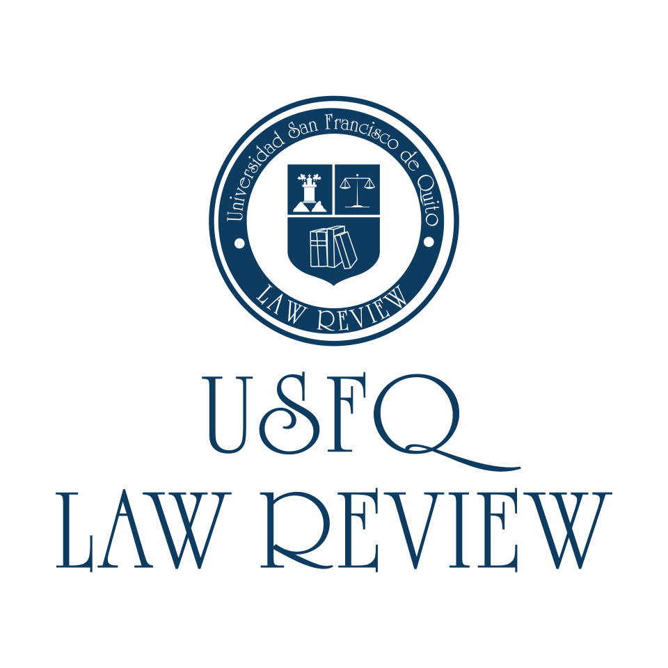

Joselyn Arias López
Lawyer specializing in Digital Law,
Telecommunications
and Data Protection
- Phone number: +1 672 399 2397
- Email: joselynyajaira2397@outlook.com
- Address: Vancouver, Canadá
- LinkedIn: https://www.linkedin.com/feed/
Biography
Education
- Diploma of Derecho Digital, Universidad San Francisco de Quito, 2024
- Lawyer of Universidad San Francisco de Quito, 2022
Professional Experience
- Legal Assistant, HEKA LAW FIRM, 2022
- Lawyer junior, HEKA LAW FIRM, 2022-2024
Practice Area
We specialize in data protection laws and ensure
compliance with privacy regulations.
Our team advises businesses on regulatory
compliance in the digital space.
Helping fintech companies navigate legal
frameworks and e-commerce regulations.
Ensuring compliance with telecom laws and
regulations.
Professional affiliations
Member of Law Review, Universidad San Francisco de Quito
Member of Foro de Abogados del Ecuador